Beginners contribution guide
Jumping into the world of open source is an exciting process, but it can also be a bit overwhelming. This beginners guide will help you make your first contribution to the Plurality project.
Introduction
Before you begin
Before getting started with this guide, it is recommended that you familiarise yourself with the following:
- Familiarise yourself with the Plurality book, and,
- Familiarise yourself with the Plurality book project
This beginners contribution guide is currently written for those who have little to no experience with contributing to open source projects. To follow the steps in this guide, you will need a computer with Windows installed, as well as an internet connection.
What is covered the guide?
The guide will help you understand and use the necessary tools to make a contribution. Here are the types of contributions it prepares you for:
- Editing of the root text
- Translating the book to other languages and subcultures
- Adding graphical design of elements to the book, including visuals and figures
- Contributing to the documentation
If you would like to contribute in a way that is not listed, we encourage you to connect with the community to introduce yourself and share your ideas.
Overview of steps in the guide
The contents covered in the beginners contribution guide are listed in the table below. If you are completely new to open source development you should follow the steps in sequential order. If you just need a refresher on contributing to open source, feel free to jump into any section as required.
| Step | Article name | Description |
|---|---|---|
| 1 | Understand your working environment | Describes the tools that you need to start your journey. |
| 2 | Install your code editor | Explains the role of the code editor and provides instructions on how to install it. |
| 3 | Create a GitHub account and browse the issues | Gives a brief introduction to GitHub and explains how GitHub "Issues" are used to guide community contributions. |
| 4 | Fork and clone the project | Explains how to copy the project onto your computer so that you can make changes to it. |
| 5 | Make changes to the project | Explains how to make changes to your copy of the project. |
| 6 | Complete a Pull Request | Explains how you can request that the change on your copy is added to the project. |
If you become stuck
If you become stuck on any of the steps, a member of the community on the Discord can help. You can connect with the community by navigating to the Get involved section of the docs.
Now that you have an overview of what is in this guide, you're all set to dive in and take your first exciting step!
Step 1: Understand your working environment
What is an open source project?
An open source project is a collaborative initiative where anyone can use, change, and share the contents of the project. Open source projects generally have the following features:
- Accessibility: The source materials are freely available to everyone.
- Collaboration: People from around the world can contribute to the project.
- Transparency: All changes and updates are visible to everyone.
- Flexibility: Users can modify the project to suit their specific needs, and use the source materials however they wish.
The Plurality book is an open source project. Instead of being controlled by one author, company, or organisation, it allows anyone to contribute content and therefore evolves as more people around the world share their ideas and perspectives.
What tools are used in open source?
There are a variety of tools that are used to facilitate open source projects. From tools that help you connect to the community to tools that generate documentation, tools are what help facilitate the work that is required to collaborate on open source projects. There are only a few tools that you will need to get started. These tools are referred to as your working environment and are listed below:
-
Code editor: A software tool that is used by contributors to create and edit project files.
-
GitHub: An online platform that the community uses to host book content, facilitate contributions from community members, manage versions of the project, and track issues.
-
Discord: A messaging platform that the community uses for communication and collaboration
We will explain more on what each tool does and how they can help you make your first contribution. However, as mentioned, the number of tools that are used in open source is vast. When you have a better understanding of the basic tools, it is encouraged that you try experimenting with other tools to contribute in new and creative ways.
Now that you have an understanding of your basic working environment, it is time to learn a bit more about your first tool: the code editor. Continue reading about the code editor in the next step.
Step 2: Install your code editor
What is a code editor?
The Notepad software on your Windows computer can be thought of as a simple code editor. When you open Notepad you are greeted with an interface that allows you to write and edit text, save your work as a .txt file, and store it in a folder on your computer. While Notepad is great for those simple tasks, it lacks a lot of the features that can help you complete the tasks required for contributing to the project. This is where more complex software, such as a code editor, can help.
Like Notepad, we can use code editors to write and edit text, save our work, and store it in a folder on our computer. However, a code editor has some other features that will help with our contribution. This includes:
- Helping us write and edit text more easily
- Saving files in Markdown (.md) and other formats
- Navigating the folders where we saved our files
- Allowing us to request that our contributions are added to the project
How to get a code editor
To get a code editor, you will need to download and install it from the internet. While there are a lot of code editors that can help facilitate contributions to an open source project, covering all of them is beyond the scope of this article. To simplify things, we will focus in on one software: Visual Studio Code (VS Code). Continue reading for steps on how to download and install it onto your computer.
Note: If you would like to use a different code editing software, there is vast list of notable code editors, and each software has it's own documentation for downloading and installing. This guide will provide instructions for using VS Code.
Download and install VS Code
- Download the Visual Studio Code installer file for Windows
- Once the installer file has downloaded, open the file to start the installation process 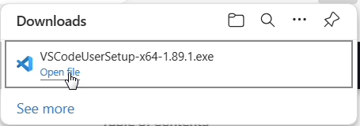
- Follow the installation instructions. You may need to grant administrative privileges if prompted
- After the installation is complete, launch VS Code. (By default, VS Code is installed under
C:\Users\{Username}\AppData\Local\Programs\Microsoft VS Code.)
When you first launch VS Code, you will be greeted with a "Get Started with VS Code" interface. Here you can customize some of the settings of VS Code, however, this is not a mandatory requirement for the purposes of the beginners contribution guide.
Download Git
After you have customized your VS Code settings, you will need to download and install Git. Git is a version control system. It is a tool that helps to keep track of all the changes you make to your files. Since we will be contributing our changes to project files, we need Git to help us track these changes. Git is required for open source collaboration with GitHub (We will discuss more about GitHub below).
To download Git, complete the following steps:
- Navigate to the Source Control tab on the left side of the VS Code interface by selecting the Source Control icon () or by typing Ctrl+Shift+G
- Click the button that says Download Git for Windows (It may be a link that says install git)
- On the Git website, navigate to Downloads
- Click download Git for Windows
- Once downloaded, open the file to install Git
- Follow the installation instructions (You can leave the settings as default)
- After the installation is complete you do not need to launch Git Bash or view the release notes
Now that you have set up your code editor and installed Git, you are ready to check out the files of the Plurality project and see what type of contributions you can make. To do this, you will first need to navigate to GitHub and create an account. This is covered in the next step.
Step 3: Create a GitHub account and browse the Issues
What is GitHub?
GitHub is an online hub for open source projects. It is a place where community members can store their contributions and work together on projects. Here are some of the features that GitHub offers:
- Storing files: Just as you save files in a folder on your computer, you can save files and store them in project folders on GitHub.
- Collaboration: GitHub allows you to browse the files that other people have stored, make changes to these files, and add your own files.
- Keeping track of changes: When you are working with files using GitHub, all changes to files are tracked so that you can go back to older versions if required.
What are GitHub issues?
GitHub issues are a feature of the GitHub platform where contributors can write down the things that they feel need to be done to improve a project. For the Plurality project, issues can be a variety of things such as required edits to the root text, additions of graphical elements, or contributions to the documentation.
Issues are a great place to go if you want to contribute to the project but you are unsure of what you exactly want to contribute. It provides a place to view a list of things that the community has identified as something that needs to get done.
Create a GitHub account
To create a free GitHub account, follow the steps below:
- Navigate to https://github.com/
- Click Sign up
- Follow the prompts to create your personal account
During sign up, you'll be asked to verify your email address. Without a verified email address, you won't be able to complete some basic GitHub tasks.
Browse the issues
After you have created a GitHub account, you can start browsing the issues on the Plurality projects GitHub page.
- Navigate to https://github.com/pluralitybook/plurality/issues
- You will see a list of issues that community members have raised 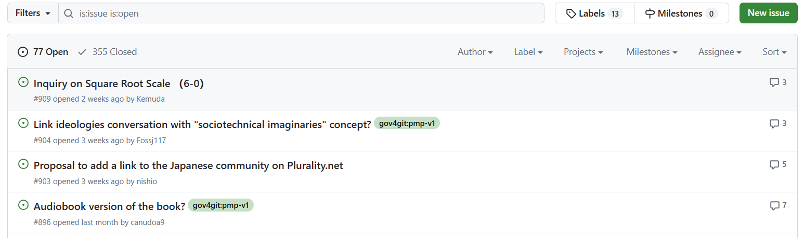
- Click on an issue that stands out to you
- After clicking on an issue, you may see a more detailed description about the issue as well as threads from community members discussing the issue
- To see issues that have been resolved, click Closed in the header of the issues table 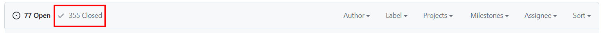
- Feel free to continue browsing the open and closed issues to get an idea of what type of work the community has been doing
Learn more about GitHub
Everything that you need to know about GitHub in order to make your first contribution to the project is covered in the beginners contribution guide. However, if you want to learn more about GitHub to feel more comfortable on the platform, check out some of GitHub's great, open-source documentation. If you are happy with just the basics, then continue to the next step.
Step 4: Fork and clone the project
What is the root repository?
In Step 3, we navigated to the Plurality book project on GitHub and browsed a list of Issues. In Step 4, we will once again go to the Plurality project GitHub page, but this time we will navigate to the < > Code section. You can find this section here: https://github.com/pluralitybook/plurality
When you arrive at the < > Code section, you will see a list of folders and files. These folders and files contain all the information that forms the Plurality book. For example, in the figs folder, you will find all of the images that are included in the Plurality book, stored as .png and .jpeg files. Most importantly, in the contents folder, you will find all of the written content for the book stored as .md files (more on this later). Feel free to click into the folders and open the files to see what is inside.
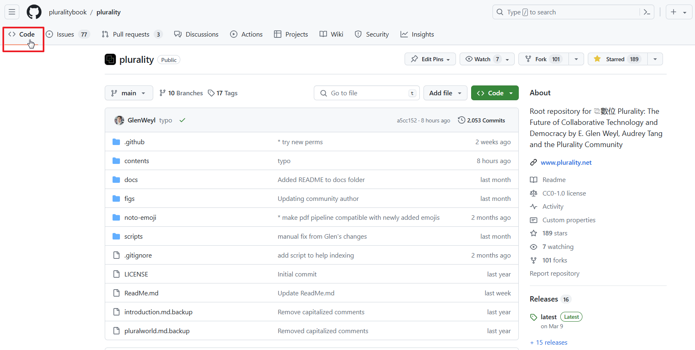
The list of files on the < > Code page is known as the projects root repository. The root repository can be thought of as a file folder, but instead of being on your personal computer, the folder is open to the public and stored on GitHub. When you make a contribution to the project, you will be changing the contents of one or more of the files in the root repository. However, you are not able to change the root repository directly, you will fiirst need to make your own personal copy of the root repository. This is where Forks and Clones can help.
Note: Translations of the Plurality book are kept on a different root repository than the Plurality book. The process for making a translation contribution is not covered in this guide, however finishing the guide will prepare you for contributing translations.
What are forks and clones?
Forks and clones are two terms that are used to refer to making a copy of a GitHub root repository. When you fork a root repository, you are making a copy of all the folders and files and storing them on your own GitHub account. When you clone a project, you are making a copy of all the files and then downloading them onto your personal computer. Below is basic overview of forks and clones.
Fork
- Location: A fork creates a copy of a projects root repository and stores it your own GitHub account.
- Purpose: It allows you to freely experiment with changing a project without affecting the original root repository.
- Usage: Forks are primarily used for contributing to a project.
Clone
- Location: A clone creates a copy of the repository on your local computer.
- Purpose: It allows you to work on the project on your own computer, making changes, and testing them as needed. Once you are satisfied with your changes, you can push them to your Fork of the project.
- Usage: Clones are used for developing, testing, and maintaining a personal version of the repository.
Fork the project
You are now ready to Fork the project onto your GitHub account. To do this, follow the steps below:
- Ensure that you are logged into your GitHub account
- Navigate to https://github.com/pluralitybook/plurality
- Select fork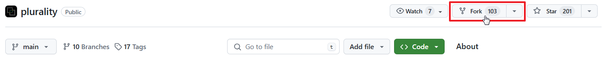
- Leave the fields as default, then select Create fork
- You will be directed to a new GitHub page that will have the following URL: "github.com/[your-user-name]/plurality"
- You now have created a copy of the Plurality project on your GitHub account!
Clone the project
Once you have a fork of the project on your GitHub account, you can clone it onto your personal computer. To do this, follow the steps below:
-
Navigate to your newly forked GitHub page (github.com/[your-user-name]/plurality)
-
Above the list of files, select < > Code 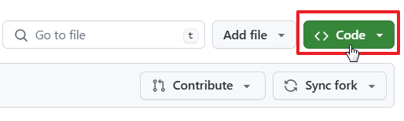
-
Under clone, select HTTPS 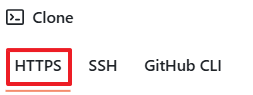
-
Click the copy icon (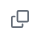) to copy the web URL
-
Open VS Code
-
On the home screen of VS Code, select clone Git repository... 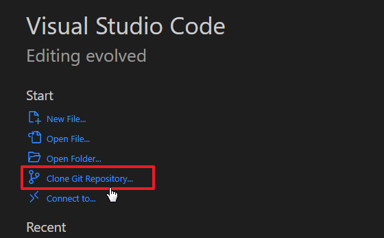
Note: If you do not see the "Clone Git repository" option, you first need to create a new window in VS Code by typing CTRL+Shift+N
-
Paste the web URL that you copied earlier and hit Enter
- You will be asked to choose a folder into which to clone the project. Select a location that you feel is most appropriate
- A copy of the project will now be copied into the folder that you selected. It may take a few seconds to load
- When prompted, open the newly populated folder in VS Code
Now that you have forked and cloned the project, you are now ready to start making your changes to the files. The next step outlines how you can do this.
Step 5: Make changes to the project
In this step, we are going to make a change to the English content of the Plurality book. The process for making other types of changes to the project is very similar and if you understand the basics of making a change to the book's content, you will be in a good place to start making other types of changes as well.
Sync your fork, and update your clone
Before you make changes to the project, you will want to sync your fork and update your clone. Syncing and updating ensure that your forked and cloned copy of the Plurality project is up to date and matches the latest changes made by other community members to the root repository. To sync your fork complete the following steps:
-
Navigate to your clone of the project (github.com/[your-user-name]/plurality)
-
Ensure you are on the < > Code tab
-
Select Sync fork 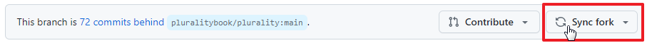
Note: If you see text to the left of Sync fork that says "This branch is up to date with pluralitybook/pluralirt-main" then you do not have to sync your fork as it is already up to date.
-
Select Update branch
Once your fork has been synced, follow the next steps to ensure that your clone is updated:
- Open VS Code
- Find your cloned version of the Plurality project and open the folder where you saved the project (CTRL+O)
- Navigate to the Source Control tab by selecting the source control icon () on the left tab
- In the source control tab, select the three dots then select Pull (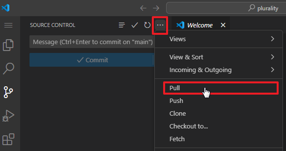)
Your forked and cloned versions of the project are now up to date!
Find the file that you want to change
-
Navigate to the Explorer tab on the left by selecting the Explorer icon (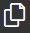). This tab contains the files of your personal clone of the project
-
Open the contents folder, then the english folder
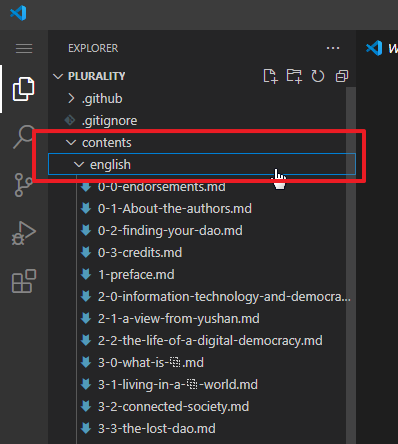
Once you open the english folder, you will see a list of files. The files start with a number, which indicates its Part and Chapter. This is followed by text that describes the file's Section. For example, the file 6-2-health.md is Part 6, Chapter 2, Health (more information about how the book is structured can be found in the book's Style Guide). You will also notice that all of the files in the english folder end in .md, or Markdown. We will discuss more about Markdown below.
Working in Markdown
Markdown is a simple file type that allows you to format text by creating headings, formatting words, making lists, etc. It is a great file type for the project because it is easy to read and edit. Markdown can also quickly be converted to other file types. This allows different community members to utilise the content of the book in different ways such as displaying the book on a website (HTML) or printing it onto physical paper (PDF).
When you open the .md file in the english folder to which you would like to make changes, it's contents will be displayed in the main area of VS Code. You will see familiar sentences and paragraphs, but you will also see some text elements that you might not be familiar with such as #, [some-text](some-link.com), or <figure>.
Below are some of the basics of what you will see in a Markdown file, however, we won't worry too much about the all of the elements, as they are not needed for our first contribution.
Headings
# Heading 1 - Indicates a Section
## Heading 2 - Indicates a Sub-section
Bold and Italics
*Italic*
**Bold**
Lists
* Item 1
* Item 2
* Item 3
1. Item 1
2. Item 2
3. Item 3
Links
[Link text](https://plurality.net)
As you work in Markdown files, you will become more familiar with all of its features. If you are curious about learning more, this website provides some great information on the different elements that can be used in Markdown.
One final thing to note about Markdown is that HTML elements can be used for specific purposes. For example, you will probably encounter a Markdown file that has a figure embedded into it. The HTML element that you will find may look like this:
<figure>
<img src="https://example/image.png" width="100%" alt="Description of image">
**<figcaption> Figure #-#-A. Figure Caption </figcaption>**
</figure>
<br></br>
In the Plurality book, HTML is most likely to be used for images and figures. If you are planning to make changes to a figure or image in the book, you can learn more about the HTML format in the Contributing figures and images section of the docs. If you just want to change text content, read on!
Make your changes
- Select a Markdown file that you would like to change. (If you are unsure what you would like to change, you may want to go back and browse the issues on GitHub.)
- In the Markdown file, find the text that you would like to edit, or the Section to which you would like to add text
- Edit the text
- Once you are happy with your changes, save the file (CTRL+S)
Note: Don't worry about making a change that you later decide you don't want to keep. This is why you cloned the project; to develop and test your own personal changes before contributing them to the public root repository.
Now that you have saved your changes to the project, you need to request that they be added to the root repository of the Plurality project. We will discuss how to do this in the next step.
Step 6: Complete a Pull Request
What is a Pull Request?
After you have made your changes to your cloned project file, you will want to request that your changes are added to the root repository so that the project's community can review your changes, make suggestions for improvements, and vote to approve the changes. Requesting that your changes are added to the root repositor is known as a Pull Request because your are requesting to "pull" your changes into the root repository.
Connect to your GitHub account on VS Code
Before making your Pull Request, ensure you are signed into your GitHub account on VS Code. To do this, go to VS Code and select the Accounts icon near the bottom of the left tab (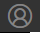). If you are already signed in to your GitHub account, you can continue to "Commit your changes" below. However if you are not signed in, you will need to complete the following steps:
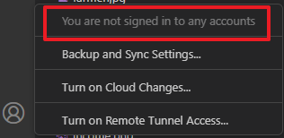
- Ensure you are signed in to your GitHub account on your internet browser
- In VS Code, open the Command Palette by typing (CTRL+SHIFT+P)
- Type the following "> GitHub: Sign In" and press Enter
- Select Allow
- Your browser will open with a page asking you to Authorize GitHub for VS Code
- Select Authorize Visual-Studio-Code
Clicking on the Accounts icon should now indicate that your are signed in to your GitHub account.
Commit your changes
The final thing to do before making your Pull Request is to Commit your changes. Committing adds the changes that you have made on your local clone, and adds them to your fork.
-
In VS Code, navigate to the Source Control tab ()
-
On the Source Control tab, you can see a list of the files to which you have made changes
-
Select Commit
-
A prompt will appear, select Yes 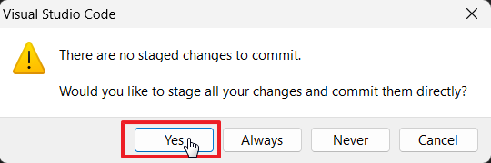
-
VS Code will then ask you to create a commit message. A commit message briefly describes the change that you have made to the project. Type in your commit message then select the checkmark to confirm 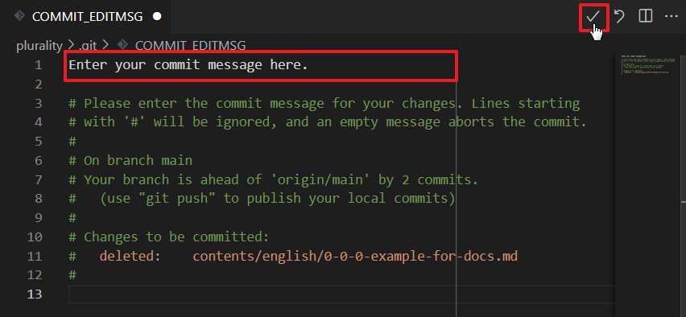
-
Select Save
-
Select Sync Changes, then select Ok when the prompt appears
-
A prompt will appear, select Sign in with your browser 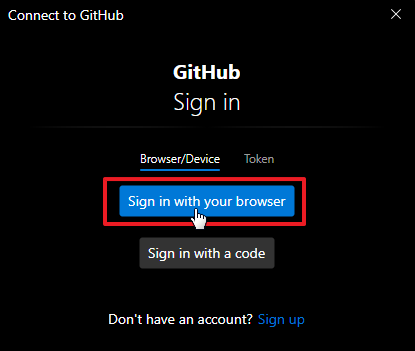
-
Select Authorize git-ecosystem
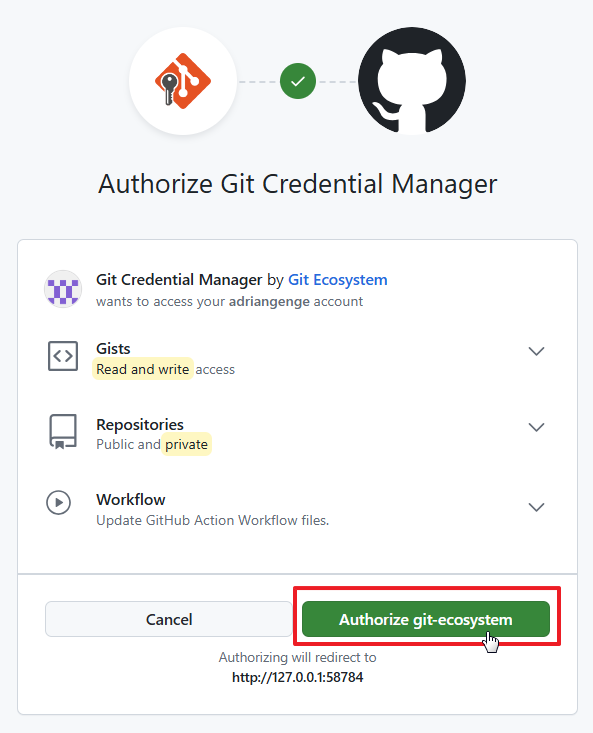 -
Finally, go to your forked version of the project on GitHub (github.com/[your-user-name]/plurality) and select the < > Code tab
-
You will notice that your fork is ahead of the root repository, and that your commit message is posted. If you go into the files you will see that your changes have been updated 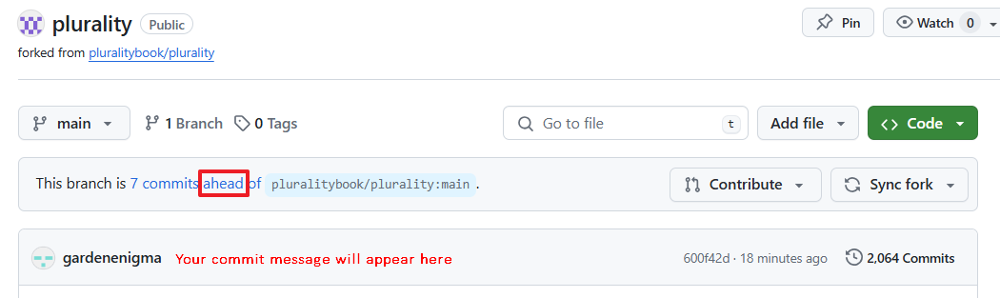
Now that your fork is updated with the changes, it is time to open your Pull Request and push your changes to the root repository of the Plurality project.
Open a Pull Request
-
Navigate to your forked version of the project on GitHub (github.com/[your-user-name]/plurality) and select the < > Code tab
-
Select Contribute then Open pull request
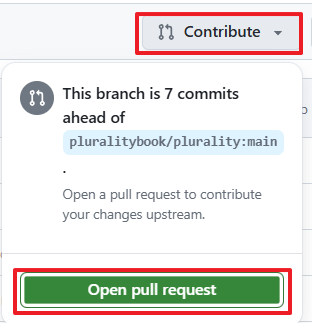 -
Add a title and a description to your pull request, then select Create pull request
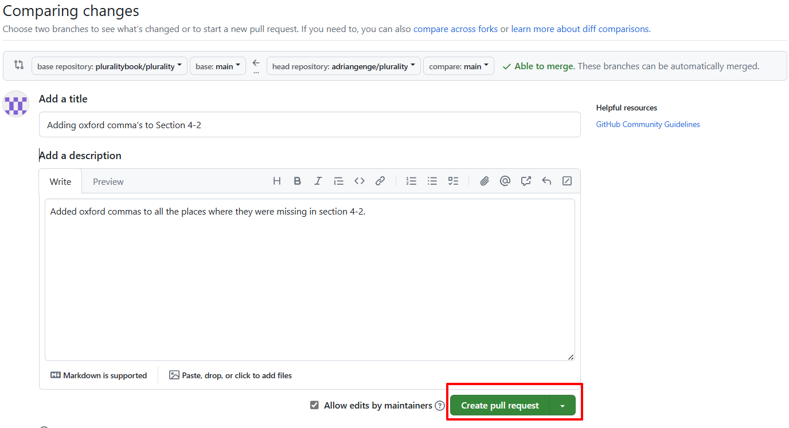
Congratulations, your Pull Request has been submitted! The community will now be able to review your contribution and vote to accept or reject it. To check on the status of your Pull Request, you can go to the Pulls tab of the plurality GitHub page (https://github.com/pluralitybook/plurality/pulls).
Note: A final note on Pull Requests: There are many different workflows that end in a Pull Request being made. If the above steps did not work for you, try troubleshooting by connecting with the community on discord, or by visiting the GitHub Pull Request docs
Next Steps
You have completed your first contribution, so what's next?
Connect with the community on Discord: Discord is a messaging platform that the community uses for communication and collaboration where you can share your ideas for the project, hear from others, and learn about other ways to contribute.
Learn about how the project is governed: Gov4Git and the Plural Management Protocol allow you to earn credits for your contributions and to use those credits to prioritize GitHub issues, and to approve or reject GitHub pull requests.
Learn about the different ways you can contribute: Learn about the different ways that you can contribute to the project by reading the contributing articles in the docs.
Thank you for reading this guide, and congratulations on making it to the end. Contributing to the Plurality project is more than just a technical endeavour. Every contribution, no matter how small, helps shape the future of the project. As you continue your contribution journey, move forward with enthusiasm, embrace the challenges, and remember, "Ask not, 'Why is nobody doing this?' You are the nobody."